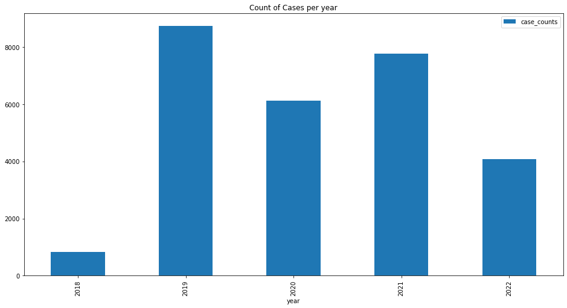

# Load that data in table format:
# https://www.practicaldatascience.org/html/pandas_series.html offers a quick tutorial on how to use the Pandas library if you are not familiar.
# The most common table data format is csv (comma separated values).
# Other common functions you may use to load the data are: pd.read_excel, pd.read_stata.
try:
import piplite
await piplite.install(['ipywidgets'])
except ImportError:
pass
import ipywidgets as widgets
import io
import pandas as pd
pd.set_option("display.max_columns", 500)
pd.set_option("display.max_rows", 500)
uploader = widgets.FileUpload()
display(uploader)
Sample Quality Check - Durham Police Department Arrest Reports
Introduction
TBD
This document contains sample code and instructions on how to evaluate the conditions of data once it is in a table format based on factors such as accuracy, completeness, consistency, reliability and whether it’s up to date. - Quality metrics: - Completenes % (Counts & proportions of NAs) - Which NAs are relevant? Which should we try to impute or delete entirely? - Consistency (Value Counts, search for typos) - How to fix inconsistent categorical values? - Reliability (Perceived vs. Self reported, which values should be consistent?) - Currency (Dates, how old is too old?) - Summary statistics: - Mean, min, max for continuous variables, crosstabs for discrete - Cross-comparison counts for discrete categorical variables - Distributions: - Histograms for continuous variables - Crosstabs, barplots for discrete categoricals variables
Step #1: Load the data
uploaded_file = uploader.value[0]
pd.read_csv(io.BytesIO(uploaded_file.content),index_col=[0])
# Take a first look:
pd.set_option("display.max_rows", None)
numRows = widgets.Dropdown(
options=['5', '10', '15', '20'],
value='5',
description='Number:',
disabled=False,
)
print("Select the number of rows you would like to preview")
display(numRows)Select the number of rows you would like to previewarrests.sample(int(numRows.value))| agencyname | datetimeofarrest | file | arrestnumber | scars_tattoes_bodymarkings_etc | age | race | sex | citizenship | skintone | height | weight | haircolor | eyecolor | armed | typeofarrest | placeofarrest | page_num | charges | charge_type | charge_counts | charge_IBRcode | charge_statutenumber | charge_warrantdate | chargenum | |
|---|---|---|---|---|---|---|---|---|---|---|---|---|---|---|---|---|---|---|---|---|---|---|---|---|---|
| 1085 | Durham Police Department | 05/25/2022 07:24 | 00 Raw Data/data/arrests0003110.pdf | 330704 | TATT UPPR ARM; TATT UPPL ARM | 39 | B | M | US | Medium | 5'09 | 170.0 | Black | Brown | UNARMED | ON VIEW | 2109 N ROXBORO ST, DURHAM | 0.0 | Driving While Impaired | Misd | 1.0 | 90D | 20-138.1 | 05/25/2022 | 1 |
| 10724 | Durham Police Department | 01/21/2019 02:59 | 00 Raw Data/data/arrests0006762.pdf | 308889 | SCAR LEFT FOREARM; SCAR LEFT ABDOMEN | 35 | B | M | US | Dark | 5'10 | 200.0 | Black | Brown | UNARMED | TAKEN INTO CUSTODY | 4310 S MIAMI BLVD, DURHAM | 0.0 | Larceny (felony) | Fel | 1.0 | 23H | 14-72(A) F | 12/20/2018 | 1 |
| 18621 | Durham Police Department | 03/01/2022 20:52 | 00 Raw Data/data/arrests0001990.pdf | 329460 | NaN | 54 | W | M | EL | NaN | 5'04 | NaN | Black | Brown | UNARMED | ON VIEW | 1199 E GEER ST/EASTVIEW ST, DURHAM | 0.0 | Driving While Impaired | Misd | 1.0 | 90D | 20-138.1 | 03/01/2022 | 1 |
| 14880 | Durham Police Department | 04/07/2022 10:28 | 00 Raw Data/data/arrests0002781.pdf | 329992 | NaN | 56 | B | F | US | Medium | 5'05 | 153.0 | Black | Brown | UNARMED | TAKEN INTO CUSTODY | 219 S MANGUM ST, DURHAM | 1.0 | Obtaining Property By False Pretenses | Fel | 1.0 | 26A | 14-100 | 06/11/2020 | 17 |
| 3204 | Durham Police Department | 09/17/2021 12:32 | 00 Raw Data/data/arrests0001865.pdf | 326155 | TATT UPPR ARM; TATT UPPL ARM | 60 | W | M | US | Light | 5'09 | 160.0 | Brown | Brown | UNARMED | ON VIEW | 999 N GUTHRIE AVE/FISKE ST, DURHAM | 0.0 | Possession Of Drug Paraphernalia | Misd | 1.0 | 35B | 90-113.22 | 09/17/2021 | 2 |
| 15039 | Durham Police Department | 04/07/2022 10:28 | 00 Raw Data/data/arrests0002781.pdf | 329992 | NaN | 56 | B | F | US | Medium | 5'05 | 153.0 | Black | Brown | UNARMED | TAKEN INTO CUSTODY | 219 S MANGUM ST, DURHAM | 2.0 | Forgery Or Possess CounterfeitInstruments | Fel | 1.0 | 250 | 14-119(A) | 06/11/2020 | 16 |
| 3083 | Durham Police Department | 02/19/2021 21:57 | 00 Raw Data/data/arrests0005269.pdf | 322147 | NaN | 56 | B | M | US | Dark | 5'06 | 185.0 | Black | Brown | UNARMED | SUMMONED/CITED | 1525 GLENN SCHOOL RD, DURHAM | 0.0 | Larceny (misdemeanor) | Misd | 1.0 | 23H | 14-72(A) M | 02/19/2021 | 1 |
| 27312 | Durham Police Department | 12/05/2018 21:42 | 00 Raw Data/data/arrests0007240.pdf | 308068 | NaN | 29 | B | F | US | Light | 5'03 | 98.0 | Brown | Brown | UNARMED | ON VIEW | 2918 ROCHELLE ST - A4, DURHAM | 0.0 | Simple Assault & Battery Or Affray | Misd | 1.0 | 13B | 14-33(A) | 12/05/2018 | 1 |
| 6614 | Durham Police Department | 10/14/2020 15:49 | 00 Raw Data/missing/arrests0001467.pdf | 320379 | NaN | 22 | B | M | US | Dark | 6'03 | 120.0 | Black | Brown | UNARMED | TAKEN INTO CUSTODY | 3019 E WEAVER ST, DURHAM | 0.0 | Fail To Appear-release Order | Misd | 1.0 | 90Z | 15A-305(B)(2) | 10/13/2020 | 1 |
| 5851 | Durham Police Department | 09/09/2020 16:06 | 00 Raw Data/missing/arrests0001468.pdf | 319872 | SCAR LEFT HAND | 54 | B | M | US | Dark | 6'03 | 180.0 | Black | Brown | UNARMED | SUMMONED/CITED | 1525 GLENN SCHOOL RD, DURHAM | 0.0 | Trespass (second Degree) | Misd | 1.0 | 90J | 14-159.13 | 09/09/2020 | 2 |
| 11193 | Durham Police Department | 11/25/2019 16:43 | 00 Raw Data/data/arrests0011406.pdf | 315385 | NaN | 22 | B | M | US | Medium | 5'07 | 130.0 | Black | Brown | UNARMED | TAKEN INTO CUSTODY | 219 S MANGUM ST, DURHAM | 1.0 | Obtaining Property By False Pretenses | Fel | 1.0 | 26A | 14-100 | 11/15/2019 | 10 |
| 7203 | Durham Police Department | 03/28/2022 09:13 | 00 Raw Data/data/arrests0003095.pdf | 329858 | NaN | 36 | W | M | US | Fair | 5'07 | 140.0 | Black | Brown | UNARMED | SUMMONED/CITED | 3454 HILLSBOROUGH RD - 308, DURHAM | 0.0 | Trespass (second Degree) | Misd | 1.0 | 90J | 14-159.13 | 03/28/2022 | 1 |
| 20264 | Durham Police Department | 05/01/2021 22:29 | 00 Raw Data/data/arrests0006183.pdf | 324170 | NaN | 35 | W | M | HD | Olive | 5'05 | 200.0 | Black | Brown | UNARMED | ON VIEW | 1099 S ROXBORO ST/E ENTERPRISE ST, DURHAM | 0.0 | Drive While License Revoked Not Impaired RevBased | Misd | 1.0 | 9914 | 20-28(A) | 05/01/2021 | 3 |
| 19039 | Durham Police Department | 01/19/2019 10:44 | 00 Raw Data/data/arrests0006802.pdf | 308869 | TATT UPP CHEST / GISELLE | 22 | B | F | US | Medium | 5'02 | 128.0 | Brown | Brown | UNARMED | TAKEN INTO CUSTODY | 219 S MANGUM ST, DURHAM | 0.0 | Obtaining Property By False Pretenses | Fel | 1.0 | 26A | 14-100 | 08/15/2018 | 2 |
| 2910 | Durham Police Department | 11/27/2021 09:07 | 00 Raw Data/data/arrests0000689.pdf | 327202 | TATT RIGH SHO | 39 | B | M | US | Medium | 5'11 | 185.0 | Black | Brown | HANDGUN | ON VIEW | 100 GRANDVIEW FOREST DR, DURHAM | 0.0 | Possessing Stolen Goods | Fel | 1.0 | 280 | 14-71.1 | 11/27/2021 | 4 |
Step #2: Which type of data do we have?
Typically, police records inform of interactions between the police and a civilian. The first step in measuring the quality of your dataset is finding out which type of data you have. As you understand the types of fields you have, define the unit of observation. Think of what does one row in your table represent.
In this example, one row is one police charge. However, there is a hiwerarchy. All charge to the same person on one police interaction are under the same “case” which is identifiable by an “arrest number”. Keep in mind this hierarchy is important to understand how police interacts with individual people.
# Check the names of the columns and verify agains the provided Metadata document which information is relevant to analysis you may wish to perform
arrests.columnsIndex(['agencyname', 'datetimeofarrest', 'file', 'arrestnumber',
'scars_tattoes_bodymarkings_etc', 'age', 'race', 'sex', 'citizenship',
'skintone', 'height', 'weight', 'haircolor', 'eyecolor', 'armed',
'typeofarrest', 'placeofarrest', 'page_num', 'charges', 'charge_type',
'charge_counts', 'charge_IBRcode', 'charge_statutenumber',
'charge_warrantdate', 'chargenum'],
dtype='object')# Look for unique identifiers to find the level of granularity of your data:
# If there are no unique columns are
arrests[
"arrestnumber"
].is_unique # for example: arrest number is not unique for each offense, but it is unique for a caseFalseStep #3: Measure data quality (completeness, currency, reliability & consistency)
The completeness of fields in your dataset will determine if you can conduct conclusive analysis. For example, one column “scars_tattoes_bodymarkings_etc” has missing values in most rows. In this example, there are 2 posibilities: (1) This information is often forgotten or impossible to collect by the police. (2) A missing value means there absence of visible “scars, tattoes or bodymarkings”.
In any case, this column is probably not an important feature to study racial and gender biases, so we can ignore or drop it from the dataset.
# Measure data completeness and data types:
def missing_zero_values_table(df):
zero_val = (df == 0.00).astype(int).sum(axis=0)
mis_val = df.isnull().sum()
mis_val_percent = 100 * df.isnull().sum() / len(df)
mz_table = pd.concat([zero_val, mis_val, mis_val_percent], axis=1)
mz_table = mz_table.rename(
columns={0: "Zero Values", 1: "Missing Values", 2: "% of Total Values"}
)
mz_table["Total Zero Missing Values"] = (
mz_table["Zero Values"] + mz_table["Missing Values"]
)
mz_table["% Total Zero Missing Values"] = (
100 * mz_table["Total Zero Missing Values"] / len(df)
)
mz_table["Data Type"] = df.dtypes
mz_table = (
mz_table[mz_table.iloc[:, 1] != 0]
.sort_values("% of Total Values", ascending=False)
.round(1)
)
print(
"Your selected dataframe has "
+ str(df.shape[1])
+ " columns and "
+ str(df.shape[0])
+ " Rows.\n"
"There are " + str(mz_table.shape[0]) + " columns that have missing values."
)
# mz_table.to_excel('D:/sampledata/missing_and_zero_values.xlsx', freeze_panes=(1,0), index = False)
return mz_table
missing_zero_values_table(arrests)Your selected dataframe has 25 columns and 27526 Rows.
There are 7 columns that have missing values.| Zero Values | Missing Values | % of Total Values | Total Zero Missing Values | % Total Zero Missing Values | Data Type | |
|---|---|---|---|---|---|---|
| scars_tattoes_bodymarkings_etc | 0 | 16049 | 58.3 | 16049 | 58.3 | object |
| skintone | 0 | 2285 | 8.3 | 2285 | 8.3 | object |
| weight | 0 | 2158 | 7.8 | 2158 | 7.8 | float64 |
| citizenship | 0 | 914 | 3.3 | 914 | 3.3 | object |
| eyecolor | 0 | 827 | 3.0 | 827 | 3.0 | object |
| haircolor | 0 | 690 | 2.5 | 690 | 2.5 | object |
| armed | 0 | 26 | 0.1 | 26 | 0.1 | object |
# Fix data types:
# For example, change date columns to "datetime" type:
arrests["datetimeofarrest"] = pd.to_datetime(
arrests["datetimeofarrest"], infer_datetime_format=True
)
arrests["year"] = arrests["datetimeofarrest"].dt.strftime("%Y")
arrests.sample(5)| agencyname | datetimeofarrest | file | arrestnumber | scars_tattoes_bodymarkings_etc | age | race | sex | citizenship | skintone | height | weight | haircolor | eyecolor | armed | typeofarrest | placeofarrest | page_num | charges | charge_type | charge_counts | charge_IBRcode | charge_statutenumber | charge_warrantdate | chargenum | year | |
|---|---|---|---|---|---|---|---|---|---|---|---|---|---|---|---|---|---|---|---|---|---|---|---|---|---|---|
| 24829 | Durham Police Department | 2022-01-15 01:20:00 | 00 Raw Data/data/arrests0000008.pdf | 327760 | NaN | 32 | W | F | US | Light | 5'06 | 170.0 | Brown | Brown | UNARMED | ON VIEW | 3105 TOWER BLVD - 207, DURHAM | 0.0 | Simple Assault & Battery Or Affray | Misd | 1.0 | 13B | 14-33(A) | 01/15/2022 | 1 | 2022 |
| 26821 | Durham Police Department | 2021-12-27 03:08:00 | 00 Raw Data/data/arrests0000277.pdf | 327548 | NaN | 54 | B | F | NaN | NaN | 5'03 | 160.0 | NaN | NaN | UNARMED | SUMMONED/CITED | 720 S LASALLE ST, DURHAM | 0.0 | Driving While Impaired | Misd | 1.0 | 90D | 20-138.1 | 12/27/2021 | 2 | 2021 |
| 21739 | Durham Police Department | 2020-06-10 08:42:00 | 00 Raw Data/data/arrests0012266.pdf | 318683 | NaN | 55 | W | M | XX | Olive | 5'05 | 140.0 | Black | Brown | UNARMED | TAKEN INTO CUSTODY | 1399 HOLLOWAY ST/PARK AVE, DURHAM | 0.0 | Uttering A Forged Instrument | Fel | 1.0 | 250 | 14-120 | 08/31/2018 | 2 | 2020 |
| 17403 | Durham Police Department | 2020-05-12 11:54:00 | 00 Raw Data/data/arrests0011573.pdf | 318218 | TATT LEFT HAND / "T MONEY" | 25 | B | M | US | Dark | 5'08 | 150.0 | Black | Brown | UNARMED | TAKEN INTO CUSTODY | 219 S MANGUM ST, DURHAM | 0.0 | True Bill Of Indictment | Fel | 1.0 | 90Z | 15A-305(B)(1) | 03/17/2020 | 1 | 2020 |
| 14333 | Durham Police Department | 2018-11-11 13:20:00 | 00 Raw Data/data/arrests0007688.pdf | 307647 | NaN | 38 | B | F | US | Medium | 5'06 | 140.0 | Black | Brown | UNARMED | TAKEN INTO CUSTODY | 917 LIBERTY ST, DURHAM | 0.0 | Possession Of Drug Paraphernalia | Misd | 1.0 | 35B | 90-113.22 | 09/11/2018 | 1 | 2018 |
# Another way to check for missing values is looking at trends
# Lets look at # of cases:
arrests["case_counts"] = 1
cases = arrests[["case_counts", "year"]].groupby(by=["year"]).sum().reset_index()
# cases.year.value_counts().plot(kind= 'bar',figsize=(16,8), title="Count of offenses per year")
print(arrests['datetimeofarrest'].describe(datetime_is_numeric=True))
cases.plot(kind="bar", figsize=(16, 8), title="Count of Cases per year", x="year")count 27526
mean 2020-08-22 22:00:17.993896704
min 2018-10-01 07:47:00
25% 2019-09-13 04:48:30
50% 2020-07-26 13:37:00
75% 2021-08-16 22:52:00
max 2022-05-31 22:36:00
Name: datetimeofarrest, dtype: object<AxesSubplot:title={'center':'Count of Cases per year'}, xlabel='year'>
Note: Data collection for this data set started with cases from Octobe 2018, the most recent case is from the last day of May in 2022. With this information we can say there are no unexpected trends in the count of cases per year.
Categorical values can be checked for correctness based on how consistent are categories.
# To check for consistency of categorical values, use ".value_counts()" in each categorical column
# Think of the possible categories of that column and if there are possible typos, change the type
print("\nSkin Tone:")
print(arrests['skintone'].value_counts())
print("\nRace:")
print(arrests['race'].value_counts())
print("\nType of Arrest:")
print(arrests['typeofarrest'].value_counts())
print("\nCharge Type:")
print(arrests['charge_type'].value_counts())
Skin Tone:
Medium 11707
Dark 5937
Light 3508
Fair 2257
Black 1017
Olive 755
Other 32
Unknown 16
Ruddy 9
Albino 2
Yellow 1
Name: skintone, dtype: int64
Race:
B 21381
W 5942
A 99
U 53
I 51
Name: race, dtype: int64
Type of Arrest:
TAKEN INTO CUSTODY 13216
ON VIEW 10964
SUMMONED/CITED 3346
Name: typeofarrest, dtype: int64
Charge Type:
Misd 18715
Fel 8809
I 1
2 1
Name: charge_type, dtype: int64# For practical purposes, we can combine skin tones "fair" and "light", we can also get rid of Yellow since there is only one. Ruddy?# Lets examine the non-conforming categories in the "charge_type" column:
arrests.loc[arrests['charge_type']=='I']| agencyname | datetimeofarrest | file | arrestnumber | scars_tattoes_bodymarkings_etc | age | race | sex | citizenship | skintone | height | weight | haircolor | eyecolor | armed | typeofarrest | placeofarrest | page_num | charges | charge_type | charge_counts | charge_IBRcode | charge_statutenumber | charge_warrantdate | chargenum | year | case_counts | |
|---|---|---|---|---|---|---|---|---|---|---|---|---|---|---|---|---|---|---|---|---|---|---|---|---|---|---|---|
| 6444 | Durham Police Department | 2022-03-27 13:23:00 | 00 Raw Data/data/arrests0003131.pdf | 329847 | NaN | 19 | B | M | US | Dark | 5'05 | 135.0 | Black | Brown | UNARMED | TAKEN INTO CUSTODY | 3643 N ROXBORO ST, DURHAM | 0.0 | Speeding - Failure To Reduce To Avoid Accident | I | 1.0 | 9914 | 20-141(M) | 03/27/2022 | 3 | 2022 | 1 |
# One option is to look at which type of charge is often given to the charge in question
print(arrests.loc[arrests['charges']=='Speeding - Failure To Reduce To Avoid Accident', 'charge_type'].value_counts())
#Here we can see that this charge is always a misdemeanor, except for that one potential typo. To fix it, use:
arrests.loc[arrests['charge_type']=='I', 'charge_type']='Misd'
arrests.loc[arrests['charge_type']=='2', 'charge_type']='Misd'
# Done! (do the same for the other potential typo)Misd 18
Name: charge_type, dtype: int64Write about considerations regarding preceived vs. actual demographics, add maybe thresholds…
(How old is too old?, how incomplete is too incomplete? )
Step #4: Compute Summary Statistics
Numerical fields can be summarized using quantiles, mean and median.
Categorical fields can be summarized using tables.
# Numerical Variables
arrests['age'].describe()
# the mean age of the arrested population between October 2018 and June 2022 is 34 years.
# Age max value is 92 and the minimum is 0. Lets investigate the 0 age rowscount 27526.000000
mean 34.193817
std 11.901175
min 0.000000
25% 25.000000
50% 31.000000
75% 42.000000
max 92.000000
Name: age, dtype: float64print(len(arrests.loc[arrests['age']==0]))
arrests.loc[arrests['age']<18] # these could be typos. 6| agencyname | datetimeofarrest | file | arrestnumber | scars_tattoes_bodymarkings_etc | age | race | sex | citizenship | skintone | height | weight | haircolor | eyecolor | armed | typeofarrest | placeofarrest | page_num | charges | charge_type | charge_counts | charge_IBRcode | charge_statutenumber | charge_warrantdate | chargenum | year | case_counts | |
|---|---|---|---|---|---|---|---|---|---|---|---|---|---|---|---|---|---|---|---|---|---|---|---|---|---|---|---|
| 5657 | Durham Police Department | 2021-09-22 22:13:00 | 00 Raw Data/data/arrests0001774.pdf | 326227 | TATT ALL NECK / BABY BOY; TATT NECK; PI... | 0 | B | M | US | Medium | 5'08 | 155.0 | Black | Brown | UNARMED | TAKEN INTO CUSTODY | 4815 S SINGING WOODS PL, DURHAM | 0.0 | Assault On Female | Misd | 1.0 | 13B | 14-33(C2) | 09/20/2021 | 1 | 2021 | 1 |
| 6243 | Durham Police Department | 2020-04-30 16:00:00 | 00 Raw Data/data/arrests0013640.pdf | 318045 | NaN | 0 | B | F | US | Unknown | 5'06 | 140.0 | Unknown/Bald | Unknown | UNARMED | ON VIEW | 3825 S ROXBORO ST, DURHAM | 0.0 | Larceny (misdemeanor) | Misd | 1.0 | 23H | 14-72(A) M | 04/30/2020 | 1 | 2020 | 1 |
| 6244 | Durham Police Department | 2020-04-30 16:00:00 | 00 Raw Data/data/arrests0013640.pdf | 318045 | NaN | 0 | B | F | US | Unknown | 5'06 | 140.0 | Unknown/Bald | Unknown | UNARMED | ON VIEW | 3825 S ROXBORO ST, DURHAM | 0.0 | Resist Delay Obstruct Public Officer | Misd | 1.0 | 90Z | 14-223 | 04/30/2020 | 2 | 2020 | 1 |
| 6245 | Durham Police Department | 2020-05-13 03:06:00 | 00 Raw Data/data/arrests0011418.pdf | 318227 | NaN | 0 | B | F | US | Unknown | 5'06 | 140.0 | Unknown/Bald | Unknown | UNARMED | ON VIEW | 1002 N ALSTON AVE, DURHAM | 0.0 | Possessing Stolen Goods | Fel | 1.0 | 280 | 14-71.1 | 05/13/2020 | 1 | 2020 | 1 |
| 20258 | Durham Police Department | 2022-02-17 15:08:00 | 00 Raw Data/data/arrests0004535.pdf | 328253 | NaN | 0 | W | M | HD | Medium | 5'08 | 200.0 | Black | Brown | UNARMED | ON VIEW | 1525 GLENN SCHOOL RD, DURHAM | 0.0 | Shoplifting | Misd | 1.0 | 23C | 14-72.1 | 02/17/2022 | 1 | 2022 | 1 |
| 26980 | Durham Police Department | 2020-02-27 14:44:00 | 00 Raw Data/data/arrests0009112.pdf | 317336 | TATT RIGH CHEST / EMPTY FIVE POINT STAR; TATT ... | 0 | B | M | US | Medium | 6'00 | 175.0 | Black | Brown | UNARMED | TAKEN INTO CUSTODY | 322 JUNCTION RD, DURHAM | 0.0 | Warrant Service For Other Jurisdiction | Misd | 1.0 | 9910 | WARR | 02/26/2020 | 1 | 2020 | 1 |
Missing values can be imputed using the mean age or just dropped from the dataset if there are not that many. In this case, there are only 6 rows with an age value that is less than 18.
arrests['charge_counts'].describe()
# The charge counts tells how many charges were made in one arrest instance or case. The mean, max and min values seem reasonable.count 27526.000000
mean 1.076546
std 0.526283
min 1.000000
25% 1.000000
50% 1.000000
75% 1.000000
max 19.000000
Name: charge_counts, dtype: float64# Categorical Variables: First, we may want to look at overall counts of offenses for each categorical variable of interest
# In this example, we will use race and sex as our categorical variable of interests
arrests['race'].value_counts()B 21381
W 5942
A 99
U 53
I 51
Name: race, dtype: int64arrests['sex'].value_counts()M 21318
F 6208
Name: sex, dtype: int64# Categorical Variables: We want to see how these variables relate to race and gender
pd.crosstab(index=arrests['charge_type'], columns=arrests['race'])| race | A | B | I | U | W |
|---|---|---|---|---|---|
| charge_type | |||||
| Fel | 26 | 7241 | 17 | 7 | 1518 |
| Misd | 73 | 14140 | 34 | 46 | 4424 |
pd.crosstab(index=arrests['charge_type'], columns=arrests['sex'])| sex | F | M |
|---|---|---|
| charge_type | ||
| Fel | 1948 | 6861 |
| Misd | 4260 | 14457 |
pd.crosstab(index=arrests['charge_type'], columns=arrests['skintone'])| skintone | Albino | Black | Dark | Fair | Light | Medium | Olive | Other | Ruddy | Unknown | Yellow |
|---|---|---|---|---|---|---|---|---|---|---|---|
| charge_type | |||||||||||
| Fel | 0 | 313 | 1817 | 638 | 1040 | 4205 | 159 | 13 | 2 | 3 | 0 |
| Misd | 2 | 704 | 4120 | 1619 | 2468 | 7502 | 596 | 19 | 7 | 13 | 1 |
We can go be even more specific in our comparisons: How much more often are specific combinations of sex and gender getting a more severe charge (felony vs. misdemeanor) for the same exact charge?
# For practicality in this example and because the population of Durham is less diverse, we will reduce our dataset to only black and white defendants
# Create a sex-race interacton field
# Find a specific charge that can be both felony and misdemeanor
# Look at the difference (this of course ignorse prior record, which may explain the difference)